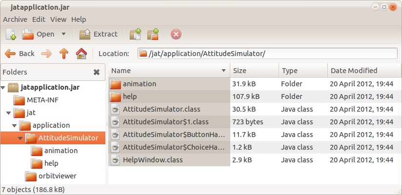
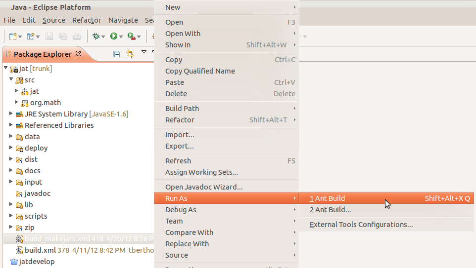
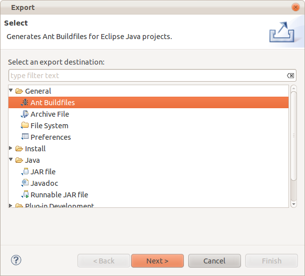

The deployment method that leads to the easiest access for the user is the integration of an applet in a web page. All the user has to do is to navigate a web browser to the URL of the web page. It only requires Java and a Java plugin to be installed. If that is not the case, then the web pag should notify the user that Java and/or the plugin are not installed and offer a link to installation procedures.
Deployment is achieved by exporting the Java class files to a jar file, creating web page and making it accessible on the Internet, and uploading the jar file or files to the Internet, in the simplest case to the same directory as the web page.
http://docs.oracle.com/javase/tutorial/deployment/jar/appman.html
The HTML code for the web page looks like this:
<html>
<body>
<applet
code="jat.application.AttitudeSimulator.AttitudeSimulator.class"
archive="../dist/jatapplication.jar,../dist/jatcore.jar,../lib/plot.jar,../lib/j3dcore.jar,
../lib/j3dutils.jar,../lib/vecmath.jar"
width="750"
height="500">
</applet>
</body>
</html> |
Note that the class loader knows where to find the main class through the package statements in the source file, and the specification in the code tag on the web page. The archive tag specifies where the jar file is located, and the code tag specifies where the main class is located, relative to the root in the jar file. This setup works on a web site on the Internet, as well as on a local directory.

The larger the jar files are, the slower the load time will be, and the bad user experience when running applets from a web site directly becomes prohibitive. However, when the user downloads the jars and resources to a local hard drive and runs them from there, the applications run very fast. The setup described above allows for a single set of deployment files that can be run from the web or locally alike. To make the download as simple as possible, all the files needed to run locally are combined in a single zip file.
Ant is a tool that can be used to automatically create a jar file for deployment, and also for automated testing. Ant is integrated in Eclipse for easier use.
Readings:
http://ant.apache.org/manual/index.html
http://www.vogella.com/articles/ApacheAnt/article.html
JAT contains an Ant buildfile that can be run by simply selecting it and choosing "Run"

This is what the current Ant build file looks like:
-------------------------------------------------
You can also have Eclipse create a build file from scratch:
Select the menu File -> Export. Choose Ant Buildfiles.
